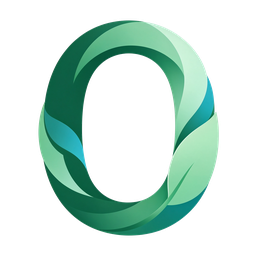

政策法规、研究报告、标准规范与实践工具，按主题归好类，全部来自公开渠道。
常见检索： 零废弃垃圾分类塑料无废城市化学品
新入库的资料，卡片上就能直接预览或下载，不必先点进详情页。
六尺巷基金会 等 7 家 · 2026
商务部 等 8 部门 · 2026
中国物资再生协会再生塑料分会 · 2026
知识库分「零废弃」与「化学品与健康」两个方向，与资料库页顶部的分类一致。
一份资料可同时属于多个主题，故主题合计大于总份数；完整筛选项在 资料库页。
用日常话描述你要什么就行。AI 只依据库内资料作答，答不上来会直说；每条结论都标出引用的原件，可一键预览或下载。